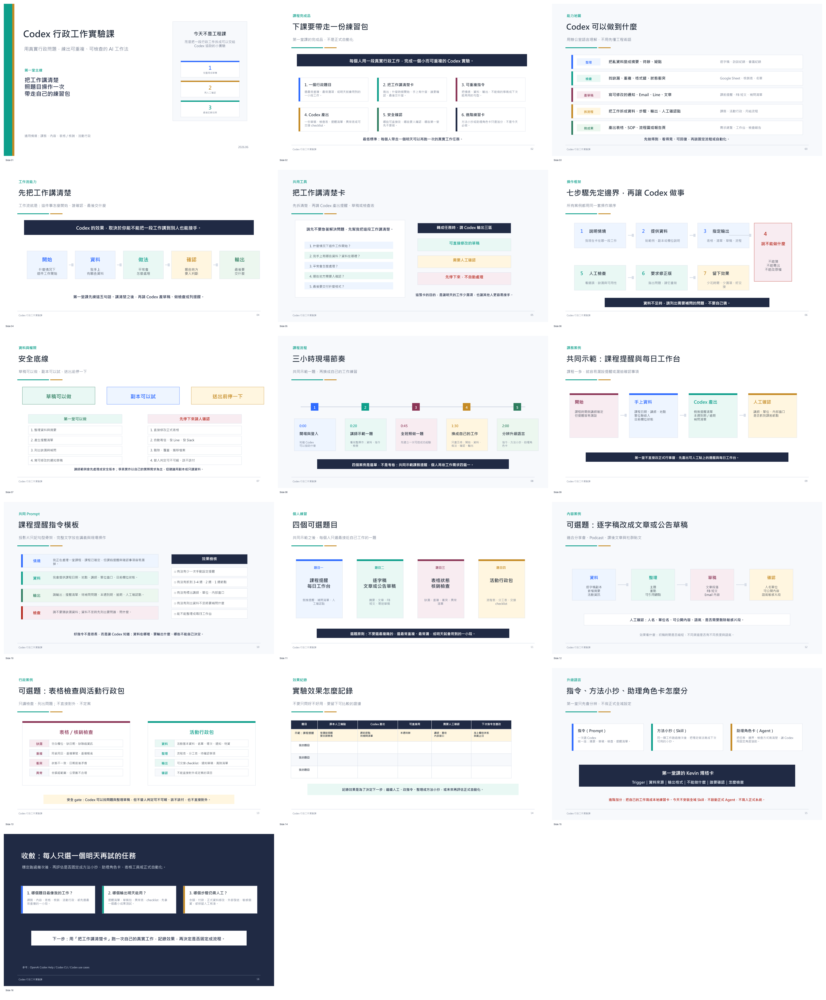

負責課務、活動、紀錄整理、表格檢查、行政追蹤與通知草稿等重複性工作的同仁。
課程規劃摘要
這堂課的重點不是展示 AI 很厲害，而是讓行政工作先變得可說明、可檢查、可交接。
讓同仁把工作拆成資料來源、處理步驟、人工確認點與輸出格式，降低漏項與交接成本。
學員會學會把需要人工判斷的環節標出來，讓成果可檢查、可交接，也知道後續若要擴充時需要哪些確認。
下課帶走一份練習包
每位學員完成一個小而可重複的行政工作實驗，重點放在可立即使用的整理方法、草稿成果與檢查清單。
選最常重複、最常漏項，或明天就會用到的一小段工作。
寫清楚什麼時候開始、手上有哪些資料、誰要確認、最後交什麼。
把情境、資料、輸出格式與不能做的事整理成下次能再用的句型。
一份草稿、提醒清單、檢查表、異常表或可交接 checklist。
標出哪些可修改使用、哪些要人確認、哪些不適合交給 AI。
課後可依成果判斷是否整理成固定方法，或再討論更進階的流程設計。
3 小時課程安排
先用安全範例建立成功經驗，再讓學員換成自己的低風險工作片段。
1
0:00-0:20
課程定位
說明本課會完成的練習包與可檢查成果。
2
0:20-0:45
講師示範
用同一題示範給資料、下指令、看輸出與修正。
3
0:45-1:20
全班照做
學員先完成一次可檢查的草稿或檢查表。
4
1:30-2:00
套用工作
選一段自己的低風險行政工作，畫出流程草圖。
5
2:00-3:00
安全收尾
整理可重複指令、人工確認點與下一次練習任務。
四個可選行政情境
課堂不要求四題全部操作。共同示範後，每位學員只選最接近自己工作的一題。
倒推提醒、整理待辦、列出等待回覆與人工確認事項。
把紀錄整理成摘要、公告、文章骨架或社群文案草稿。
只讀檢查缺漏、重複、衝突與異常，不替人定案。
整理流程、分工、通知草稿、風險清單與可交接 checklist。
課堂怎麼操作
所有練習都使用同一個短句型，先定義資料、輸出與不能做的事。
共用指令骨架
- 我要處理的工作是什麼？
- 我手上有哪些資料？資料從哪裡來？
- 我希望輸出成表格、清單、草稿或流程？
- 哪些地方不能猜，必須列成補問？
- 最後請分成：可用、需人工確認、不適合 AI 處理。
會練會整理、摘要、檢查缺漏，產出可修正的草稿。
會標出哪些內容要人工確認、由誰確認、何時才能使用。
會帶走一份可重複指令、一份工作檢查表與後續改善清單。
課程畫面參考
PPT 已改成非資訊背景同仁可讀的版本：大字、短句、色彩標示安全與人工確認，並把四個案例改成可選題目。

課後成果檢核
不只問好不好用，而是看這次是否真的減少漏項、節省重複整理時間，並保留人工判斷。
學員能否說清楚資料來源、處理步驟、人工確認點與輸出格式。
是否有草稿、提醒清單、異常表或 checklist，而不是只停在概念討論。
是否明確標出需要人判斷、需要補資料或需要主管確認的內容。
後續確認事項
正式安排課程前，建議先確認學員可使用的資料等級、課後成果收集方式，以及後續若要進入正式資料更新或排程自動化時的權限與人工核准流程。本課先讓同仁把工作說清楚、做出可檢查成果，再決定哪些流程值得升級。